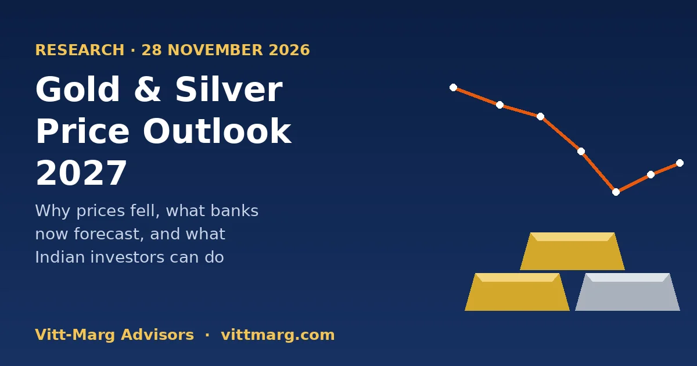
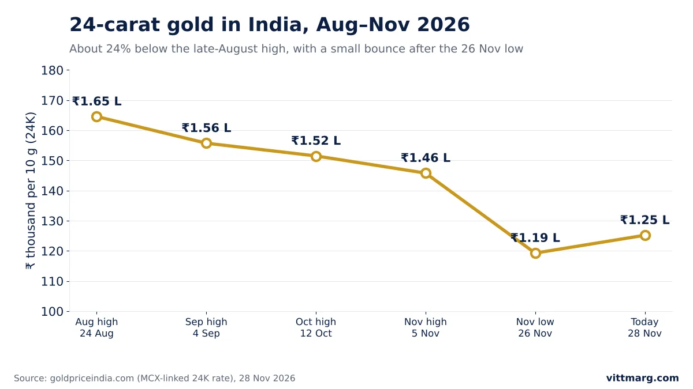
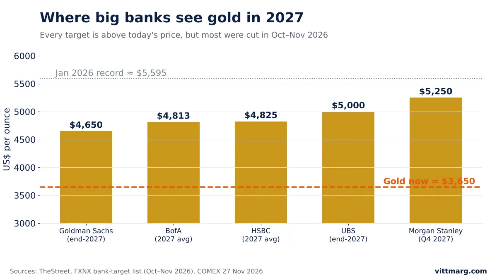
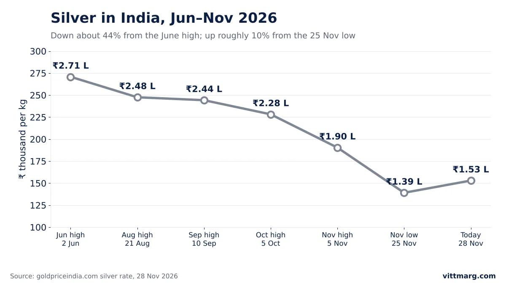

If you bought gold or silver this year, the last three months have been uncomfortable. On 28 November 2026, 24-carat gold in India was about ₹1,25,200 per 10 grams. In late August it was close to ₹1,64,600. Silver was about ₹1,53,000 per kg, against more than ₹2,70,000 in early June. That is a fall of roughly 24% in gold and 44% in silver in a few months.
So the real questions are simple. Why did this happen, is the fall over, and what do the people who forecast these metals for a living expect for 2027? We read the latest bank notes and market reports so you do not have to. Every number below comes from a dated source, listed at the end.
Where prices stand today
| Metal | Price on 28 Nov 2026 | High this year (from our source tables) | Change from that high |
|---|---|---|---|
| Gold, 24K (India) | about ₹1,25,200 per 10 g | ₹1,64,571 on 24 Aug | about −24% |
| Gold, 22K (India) | about ₹1,14,800 per 10 g | — | — |
| Silver (India) | about ₹1,53,000 per kg | ₹2,70,834 on 2 Jun | about −44% |
| Gold (international) | about $3,650 an ounce (COMEX, 27 Nov) | about $5,595 in January 2026 | about −35% |
| Silver (international) | about $43 an ounce (COMEX, 27 Nov) | $121.62 on 29 Jan 2026 | about −64% |
Indian rates are MCX-linked and exclude GST and making charges. Your jeweller's price will be higher. On Friday 27 November, MCX December gold settled at ₹1,25,198 per 10 grams, up about 2.4% on the day, and MCX silver at ₹1,52,322 per kg, up about 4.4%. That bounce came after both metals fell to their lowest levels in several months earlier in the week.

Why gold and silver fell
At the start of 2026 almost everyone expected interest rates to keep falling, and gold hit a record of about $5,595 an ounce in late January. Then four things changed.
- The Iran conflict and an oil shock. The conflict that began on 28 February 2026 disrupted oil supplies through the Strait of Hormuz. Gold rose at first, as it usually does in a crisis, but higher oil prices soon fed into inflation. By 23 March gold was already about 15% below where it stood when the conflict began.
- Inflation came back. US PCE inflation, the Fed's preferred measure, was 3.8% in October, the highest since 2023.
- The Fed turned from cuts to hikes. After a strong US jobs report on 6 November, traders priced in about an 80% chance of a rate hike in December. By 26 November, CME FedWatch put it at 97.5%. Gold pays no interest, so when bonds and deposits pay more, gold loses some of its appeal. Goldman Sachs says this period has "echoes of 2022", when gold also struggled through a hiking cycle.
- Investors sold. Some investors sold gold to raise cash and lock in earlier profits. Silver-backed funds have seen heavy outflows this year, and silver, being a smaller and more volatile market, fell much further than gold.
What is still supporting gold
- Central banks are still buying. The World Gold Council reported 61 tonnes of net central-bank buying in September, and China's central bank added 25.8 tonnes in October. The WGC expects 700 to 900 tonnes of central-bank buying in 2026, which is lower than the 1,000-plus tonnes a year of 2022 to 2024 but still very large.
- A weak rupee. The rupee was around ₹92.4 to the dollar in late November. A weaker rupee keeps Indian gold prices higher than the international fall alone would suggest, which is why gold in India has fallen less than gold in dollars.
- Uncertainty has not gone away. Geopolitical risk, high government debt and questions over the dollar are the long-term reasons central banks hold gold, and none of them has been solved.
What the banks now forecast for 2027

| Bank | 2027 gold forecast | Date | Note |
|---|---|---|---|
| Goldman Sachs | $4,650 an ounce by end-2027 | 16 Nov 2026 | Cut from $5,400 to $4,800 on 5 Nov, then to $4,650. Sees gold taking about two years to top its record. |
| Bank of America | $4,813 average for 2027 | 13 Oct 2026 | |
| HSBC | $4,825 average for 2027 | 1 Oct 2026 | Cut from $4,925. |
| UBS | $5,000 by end-2027 ($4,600 by June 2027) | 18 Nov 2026 | Warned gold could dip towards $4,000 first, then regain momentum as rate-hike fears fade. |
| Morgan Stanley | $5,250 for Q4 2027 | 17 Nov 2026 | Quarterly path of $4,850, $5,000, $5,100 and $5,250. |
Two things stand out. First, every target is above today's price of roughly $3,650, so the banks broadly see the fall as a correction, not the end of gold's long rise. Second, the direction of revisions is down. Banks have been cutting targets for two months, and none of them expects gold to return to its January record before the end of 2027.
In rupee terms, Ashish Rajodiya of PL Capital gave an MCX gold range of ₹1,12,000 to ₹1,35,000 per 10 grams for the next six months, and ₹1,20,000 to ₹1,50,000 for the next twelve. On the charts, analysts at Enrich Money see support around ₹1,21,000 to ₹1,21,700 and then ₹1,17,500 to ₹1,18,500, with resistance at ₹1,26,300 to ₹1,27,000 and then near ₹1,30,000.
And silver?

Silver forecasts are more spread out, because silver is both a precious metal and an industrial one. Bank of America expects an average of $55 an ounce in the last quarter of 2026 and $70 for 2027, with $75 in the middle of the year. Its model has the market moving from a 910-tonne surplus in 2026 to an 852-tonne deficit in 2027. Metals Focus, which compiles the World Silver Survey, forecasts an average of $84.40 for 2027, but also says 2027 could see a small surplus because solar panel makers are using less silver per panel. We cover silver in detail in our silver price forecast for 2027.
What to watch in the next few weeks
- The Fed meeting on 8 and 9 December. A hike is almost fully priced in. What matters more is whether the Fed signals more hikes in 2027. A softer message would help gold; a hawkish one could push it down again.
- US inflation data. If PCE inflation starts to cool from 3.8%, the case for more hikes weakens.
- Oil prices and the Middle East. Calmer oil prices mean less inflation and fewer hikes, which is good for gold in the medium term.
- The rupee. Every rupee of depreciation against the dollar adds about 1% to the Indian gold price.
- Central-bank buying. Monthly World Gold Council data shows whether the biggest buyers are still in the market.
What this means for an Indian buyer
We are not investment advisers and this is not a recommendation to buy or sell. But the research does point to a few practical habits that make sense in any market.
- Do not try to catch the exact bottom. Even UBS, which expects gold to recover, warned it could first dip towards $4,000 an ounce. Buying in small parts over several months smooths out the swings.
- Keep gold as a portion, not the whole plan. Many planners suggest holding gold as a modest share of your savings, for balance, not for quick returns.
- Think about the form. Gold ETFs and gold mutual funds avoid making charges and the 3% GST on jewellery and coins, and are easier to sell. The government has not issued a new Sovereign Gold Bond tranche since February 2024, so existing SGBs can only be bought on the stock exchange.
- Know the tax before you sell. Gold and silver ETFs held for more than 12 months, and physical gold or silver held for more than 24 months, are taxed as long-term gains at 12.5%. Shorter holdings are taxed at your slab rate. Our note on silver tax in India explains the rules, which apply in the same way to gold.
- Treat silver as the riskier metal. Silver fell almost twice as far as gold this year. It can also rise faster, but only money you can leave alone for a few years belongs in it.
Sources
- India gold and silver rates and monthly highs: goldpriceindia.com, 28 November 2026.
- MCX settlement, COMEX prices and analyst levels: The Open Press, 28 November 2026.
- US PCE inflation, FedWatch odds, rupee and UBS near-term view: Upstox gold price tracker, 26 November 2026.
- Goldman Sachs revision, record high, central-bank buying, Fed hike odds: TheStreet, 8 November 2026.
- Bank target list (Goldman, UBS, BofA, HSBC, Morgan Stanley): FXNX, checked 19 November 2026.
- Central-bank buying forecast: BullionStar, citing the World Gold Council, 2026.
- Bank of America silver outlook: SMM, 19 November 2026. Metals Focus: FXStreet, November 2026.
Frequently asked questions
What is the gold rate in India today, 28 November 2026?
24-carat gold was about ₹1,25,200 per 10 grams and 22-carat about ₹1,14,800 per 10 grams on 28 November 2026, before GST and making charges. MCX December gold settled at ₹1,25,198 on 27 November.
Why is gold falling in 2026?
Oil prices rose after the Iran conflict, US inflation came back to 3.8%, and the US Federal Reserve moved towards raising interest rates. Gold pays no interest, so it loses appeal when rates rise. Some investors also sold to book profits.
What is the gold price forecast for 2027?
Bank forecasts published in October and November 2026 range from about $4,650 an ounce (Goldman Sachs, end-2027) to $5,250 (Morgan Stanley, Q4 2027), against about $3,650 at the end of November 2026. In India, PL Capital gave a 12-month MCX range of ₹1,20,000 to ₹1,50,000 per 10 grams.
Will silver go up in 2027?
Bank of America expects silver to average $70 an ounce in 2027 and Metals Focus $84.40, against about $43 at the end of November 2026. Both depend on investors returning to silver; industrial demand from solar panels is expected to fall.
Is this a good time to buy gold?
We do not give buy or sell advice. Banks expect gold to recover by 2027 but warn of more volatility first, so many investors prefer to buy in small parts over several months rather than all at once.
How Vitt-Marg helps
Vitt-Marg is a CMA-led practice in Noida. We do not sell gold or give investment advice, but we help you understand the tax on selling gold, silver, ETFs and jewellery, plan capital gains, and report them correctly in your return.
General information and research, current as of 28 November 2026. This is not investment advice and not a recommendation to buy or sell gold or silver. Vitt-Marg Advisors is not a SEBI-registered investment adviser. Prices move every day and forecasts can be wrong; check current rates and speak to a registered adviser before investing.